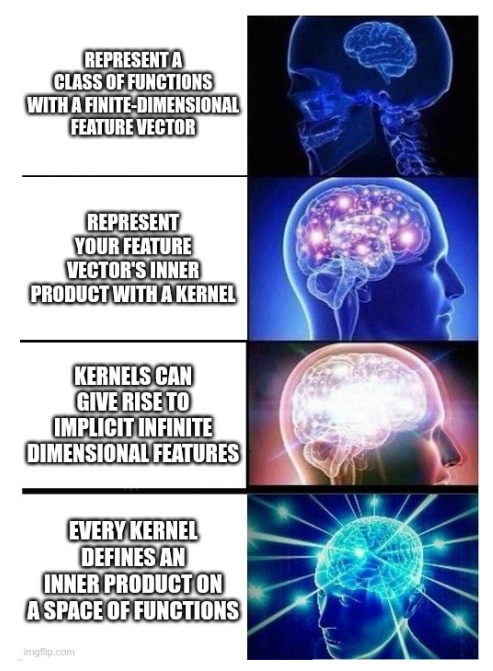
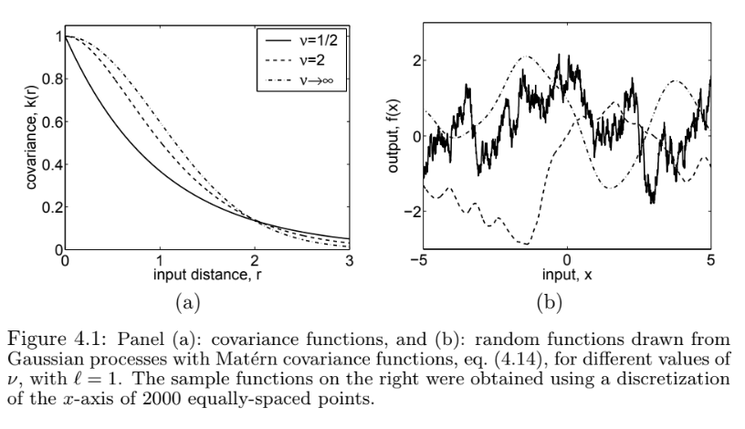

Reproducing kernel Hilbert spaces
Goals
- Define and apply reproducing kernel Hilbert spaces
- Define (rather forcibly) a feature space and inner product from a given symmetric positive definite kernel
- Show that this norms in this feature space generalize the \(L_2\) penalty in ridge regression
- Connect the norm to the feature expansions guaranteed by Mercer’s theorem
- State and prove the representer theorem, which guarantees computationally tractable solutions to infinite–dimensional problems
Reading
I will be taking readings from @scholkopf:2002:learningwithkernels and @rasmussen:2006:gpml, both of which are available digitally from the UC Berkeley library website. I’ll also use @esl:2009:hastie Chapter 12.
Roadmap

Suppose we have a symmetric, positive definite kernel \(\mathcal{K}_{\,}: \mathcal{Z}\times\mathcal{Z}\mapsto \mathbb{R}^{}\) (hereafer referred to as a PD kernel). We would like to use this as part of generic ML algorithms, not only ones that are reducible formally to inner products — this will give us a true generally applicable “kernel trick.”
We will do this by using a kernel to define a bespoke space of functions and a corresponding inner product which the kernel evaluates by construction. This space will be a “reproducing kernel Hilbert space” (RKHS). Though this will seem artificial, we can connect it to the feature expansions given by Mercer’s theorem and see that the RKHS inner product imposes smoothness on ordinary L2 functions relative to the standard L2 norm.
Finally, we show that any ML problem that regularizes using the RKHS norm admits a finite–dimensional solution, and so is computationally tractable. This result is known as the “representer theorem.”
Review: Inner products on function spaces
We’re going to define function–valued regression features, and that will require using inner products on function spaces.
Assume for this lecture that we have a fixed density \(\mu(\cdot)\) defined on \(\mathcal{Z}\) (we require \(\int \mu(z) dz< \infty\), but \(\mu(\cdot)\) need not be a probability density). This density need have nothing to do with the data, though it is most useful if \(\mu(A) > 0\) for any set \(A\) that has positive probability in the data generating process. Consider \(\mathcal{F}= \{ f: \mathcal{Z}\mapsto \mathbb{R}^{}: \int f(z)^2 \mu(z) dz< \infty \}\), together with the inner product
\[ \left<f, g\right>_\mu = \int f(z) g(z) \mu(z) dz. \]
If the domain \(\mathcal{Z}\) is finite, you can just take \(\mu(\cdot) = 1\). We’ll actually work with the completion of this space, which we will call \(L_2(\mu)\); this is a Hilbert space, meaning a vector space, with an inner product, that contains all its limit points.
Note that the inner product defines the “size” of a function — we can say \(\left\Vert f\right\Vert_\mu^2 = \left<f, f\right>_\mu = \int f(z)^2 \mu(z) dz\). Some functions are bigger than others. This particular norm considers functions large if they are pointwise large in magnitude over large regions as measured by \(\mu(\cdot)\).
Of course, you can define other inner products on \(L_2(\mu)\), just like you can define other inner products on \(\mathbb{R}^{P}\) using PSD matices. In fact, defining a new norm on \(L_2(\mu)\) is the primary task for today.
Reproducing kernel Hilbert space
Suppose we have PD kernel \(\mathcal{K}_{\,}\) defined on \(\mathcal{Z}\times \mathcal{Z}\). Here’s our first trick: for a fixed \(z_n\), we note that the map \(\mathcal{K}_{\,}(\cdot, z_n)\) is itself a function \(\mathcal{Z}\mapsto \mathbb{R}^{}\). If we further assume that \(\int \mathcal{K}_{\,}(z, z_n)^2 \mu(z) dz< \infty\), then \(\mathcal{K}_{\,}(\cdot, z_n) \in \mathcal{F}\); we will assume that going forward.
Now, consider all functions \(f\) that take the following form. Fix \(\boldsymbol{a}= (a_1, \ldots, a_K)\), and fix \(\boldsymbol{Z}= (z_1, \ldots, z_K)\). These can be anything, but they each need to be the same length. Then, using these, define the function: \[ f(z; \boldsymbol{a}, \boldsymbol{Z}, K) := \sum_{k=1}^K a_k \mathcal{K}_{\,}(z, z_n). \] One can show that \(f(z; \boldsymbol{a}, \boldsymbol{Z}, K) \in \mathcal{F}\) as well.
Now comes the big trick. Given two functions \(\mathcal{K}_{\,}(\cdot, z_n)\) and \(\mathcal{K}_{\,}(\cdot, z_m)\), we define the inner product:
\[ \left<\mathcal{K}_{\,}(\cdot, z_n), \mathcal{K}_{\,}(\cdot, z_m)\right>_\mathcal{H}:= \mathcal{K}_{\,}(z_n, z_m). \]
Note that this norm is different from the L2 norm — we will be precise about this difference and give an example in the homework. In general,
\[ \left<\mathcal{K}_{\,}(\cdot, z_n), \mathcal{K}_{\,}(\cdot, z_m)\right>_\mathcal{H}\ne \left<\mathcal{K}_{\,}(\cdot, z_n), \mathcal{K}_{\,}(\cdot, z_m)\right>_\mu. \]
We can additionally define our inner product to be linear:
\[ \left<a \mathcal{K}_{\,}(\cdot, z_n) + b \mathcal{K}_{\,}(\cdot, z_p), \mathcal{K}_{\,}(\cdot, z_m)\right>_\mathcal{H}:= a \left<\mathcal{K}_{\,}(\cdot, z_n), \mathcal{K}_{\,}(z_n, z_m)\right>_\mathcal{H}+ b \left<\mathcal{K}_{\,}(\cdot, z_p), \mathcal{K}_{\,}(z_n, z_m)\right>_\mathcal{H}. \]
The only thing left to show is whether the inner product is positive definite. But it is, as long as the kernel is PD:
\[ \begin{aligned} \left<f(\cdot; \boldsymbol{a}, \boldsymbol{Z}, K), f(\cdot; \boldsymbol{a}, \boldsymbol{Z}, K)\right>_\mathcal{H}={}& \left<\sum_{k=1}^K a_k \mathcal{K}_{\,}(\cdot, z_k), \sum_{k=1}^K a_k \mathcal{K}_{\,}(\cdot, z_k)\right>_\mathcal{H} \\={}& \sum_{k=1}^K \sum_{k'=1}^K a_k a_{k'} \left<\mathcal{K}_{\,}(\cdot, z_k), \mathcal{K}_{\,}(\cdot, z_{k'})\right>_\mathcal{H} \\={}& \sum_{k=1}^K \sum_{k'=1}^K a_k a_{k'} \mathcal{K}_{\,}(z_{k'}, z_k) \\={}& \boldsymbol{a}^\intercal\mathcal{K}_{\boldsymbol{Z}} \boldsymbol{a}\ge 0, \end{aligned} \]
where we note the appearance of the gram matrix, and where the final line relies on positive definitess of \(\mathcal{K}_{\,}\).
The only real mathematical difficulty lies in the completion of this space, and in showing that these properties continue to hold for functions that are limits of finite sums of this form. They do — see Chapter 12 of @wainwright:2019:high for these kinds of details. Presuming those results, we can define the Hilbert space \(\mathcal{H}\) to be the space of all functions of the form \(f(\cdot; \boldsymbol{a}, \boldsymbol{Z}, K)\), plus their limits, all equipped with (and under) the inner product \(<\cdot,\cdot>_\mathcal{H}\).
The reproducing property
Why is this called a “reproducing kernel” Hilbert space? It’s because the inner product with the kernel “evaluates” or “reproduces” a function. For \(f\in \mathcal{H}\),
\[ \left<\mathcal{K}_{\,}(\cdot, z), f\right>_\mathcal{H}= f(z). \]
This is not just a matter of nomenclature — it shows that \(L_2(\mu)\) cannot be a RKHS, since you cannot find any function \(\mathcal{E}_\ \in L_2(\mu)\) such that \({\mathcal{E}_z, f} = f(z)\) for all \(f\in L_2(\mu)\). (You can probably convince yourself of this, but to prove it formally, you can show that the evaluation operator \(z\mapsto f(z)\) is discontinuous, and so cannot be represented by a bounded linear operator.)
An example: OLS as an RKHS
As a simple example, let us derive the RKHS corresponding to the OLS model \(\mathcal{F}= \{ f(\boldsymbol{z}) = \boldsymbol{z}^\intercal\boldsymbol{\beta}\textrm{ for some }\boldsymbol{\beta}\in \mathbb{R}^{D}\}\). (The general case for regressing on \(\boldsymbol{x}= \phi(\boldsymbol{z})\) is an exercise.) We will take the kernel \(\mathcal{K}_{OLS}(\boldsymbol{z}, \boldsymbol{z}') = \boldsymbol{z}^\intercal\boldsymbol{z}'\), show that RKHS corresponds to \(\mathcal{F}\) with the inner product \(\left<f, g\right>_\mathcal{H}= \boldsymbol{\beta}^\intercal\boldsymbol{\beta}'\) when \(f(\boldsymbol{z}) = \boldsymbol{\beta}^\intercal\boldsymbol{z}\) and \(g(\boldsymbol{z}) = {\boldsymbol{\beta}'}^\intercal\boldsymbol{z}\).
First, note that \(f(\boldsymbol{z}) = \mathcal{K}_{OLS}(\boldsymbol{z}_k, \boldsymbol{z}) = \boldsymbol{z}_k^\intercal\boldsymbol{z}\). So functions in \(\mathcal{H}\) take the following form (or their limits): \[ \begin{aligned} f(\boldsymbol{z}; \boldsymbol{a}, \boldsymbol{Z}, K) ={}& \sum_{k=1}^K a_k \mathcal{K}_{OLS}(\boldsymbol{z}_k, \boldsymbol{z}) \\={}& \sum_{k=1}^K a_k \boldsymbol{z}_k^\intercal\boldsymbol{z}\\={}& \left(\boldsymbol{Z}^\intercal\boldsymbol{a}\right)^\intercal\boldsymbol{z}. \end{aligned} \]
As long as there exist \(D\) linearly independent \(\boldsymbol{z}_k\) (they need not be in the observed data), then we can take \(K=D\) and find \(\boldsymbol{a}\) such that \(\boldsymbol{Z}^\intercal\boldsymbol{z}= \boldsymbol{\beta}\) for any \(\boldsymbol{\beta}\). (If there do not exist \(D\) linearly independent \(\boldsymbol{z}_k\), then we can eliminate the redundant dimensions and redefine \(\mathcal{F}\) using only linearly independent components of \(\boldsymbol{z}\).) So the elements of \(\mathcal{H}\) correspond to the elements of \(\mathcal{F}\). (It can be an exercise to show that different choices of \(\boldsymbol{Z}\) and \(\boldsymbol{a}\) that lead to the same \(\boldsymbol{\beta}\) also lead to the same element of \(\mathcal{H}\) as far as the inner product \(<\cdot,\cdot>_\mathcal{H}\) is concerned.)
Suppose now that we have two elements of \(\mathcal{H}\), \(f(\boldsymbol{z}; \boldsymbol{a}, \boldsymbol{Z}, K)\) and \(f(\boldsymbol{z}; \boldsymbol{a}', \boldsymbol{Z}, K')\). Then
\[ \begin{aligned} \left<f(\cdot; \boldsymbol{a}, \boldsymbol{Z}, K), f(\cdot; \boldsymbol{a}', \boldsymbol{Z}, K')\right>_\mathcal{H} ={}& \left<\sum_{k=1}^K a_k \mathcal{K}_{OLS}(\boldsymbol{z}_k, \cdot), \sum_{k=1}^{K'} a_k' \mathcal{K}_{OLS}(\boldsymbol{z}_k', \cdot)\right>_\mathcal{H} \\={}& \sum_{k=1}^K \sum_{k'=1}^{K'} a_k a_{k'}' \left< \mathcal{K}_{OLS}(\boldsymbol{z}_k, \cdot), \mathcal{K}_{OLS}(\boldsymbol{z}_{k'}', \cdot)\right>_\mathcal{H} \\={}& \sum_{k=1}^K \sum_{k'=1}^{K'} a_k a_{k'}' \mathcal{K}_{OLS}(\boldsymbol{z}_k, \boldsymbol{z}_{k'}') \\={}& \sum_{k=1}^K \sum_{k'=1}^{K'} a_k a_{k'}' \boldsymbol{z}_k^\intercal\boldsymbol{z}_{k'}' \\={}& \sum_{k=1}^K a_k \boldsymbol{z}_k^\intercal\sum_{k'=1}^{K'} a_{k'}'\boldsymbol{z}_{k'}' \\={}& (\boldsymbol{Z}^\intercal\boldsymbol{a})^\intercal({\boldsymbol{Z}'}^\intercal\boldsymbol{a}'). \end{aligned} \]
It follows that if \(f(\boldsymbol{z}; \boldsymbol{\beta}) = \boldsymbol{\beta}^\intercal\boldsymbol{z}\), then \(f(\boldsymbol{z}; \boldsymbol{\beta}) = f(\boldsymbol{z}; \boldsymbol{a}, \boldsymbol{Z}, D)\) where \(\boldsymbol{Z}^\intercal\boldsymbol{a}= \boldsymbol{\beta}\), and likewise for \(f(\boldsymbol{z}; \boldsymbol{\beta}')\), and so \(<f(\cdot; \boldsymbol{\beta}), f(\cdot, \boldsymbol{\beta}')>_\mathcal{H}= \boldsymbol{\beta}^\intercal\boldsymbol{\beta}'\). In particular, the “size” of \(f(\boldsymbol{z}; \boldsymbol{\beta})\) in \(\mathcal{H}\) is given by
\[ \left\Vert f(\cdot; \boldsymbol{\beta})\right\Vert_\mathcal{H}^2 = \left<f(\cdot; \boldsymbol{\beta}), f(\cdot; \boldsymbol{\beta})\right>_\mathcal{H}^ = \left\Vert\boldsymbol{\beta}\right\Vert_2^2. \]
Intriguingly, this means that ridge regression,
\[ \mathscr{L}(\boldsymbol{\beta}; \lambda) = \frac{1}{2} \sum_{n=1}^N(y_n - \boldsymbol{\beta}^\intercal\boldsymbol{z})^2 + \frac{\lambda}{2} \left\Vert\boldsymbol{\beta}\right\Vert_2^2 \quad\textrm{for}\quad\boldsymbol{\beta}\in \mathbb{R}^{D}. \]
is equivalent to the RKHS objective
\[ \mathscr{L}(f; \lambda) = \frac{1}{2} \sum_{n=1}^N(y_n - f(\boldsymbol{z}))^2 + \frac{\lambda}{2} \left\Vert f\right\Vert_\mathcal{H}^2 \quad\textrm{for}\quad f\in \mathcal{H}. \]
That is, ridge regression is trading the least–squares loss against the “size” of the prediction function, where “size” is measured by the RKHS norm.
This strongly suggests the possibility of (a) replacing the OLS RKHS with another one, possibly one with an infinite–dimensional basis, and even (b) replace the squared loss with a generic loss. The missing piece to make this rigorous — as well as to guarantee computable solutions even in infinite–dimensional problems — is the representer theorem.
The representer theorem
For simplicity, I will state a special case of a more general version of the representer theorem given in Theorem 4.2 in section 4.2 of @scholkopf:2002:learningwithkernels.
Let \(\mathcal{H}\) be an RKHS defined on functions from \(\mathcal{Z}\) to the domain of the response variable \(y\), and let Let \(\mathscr{L}(\boldsymbol{z}_n, y_n, f(\cdot))\) denote the loss for using \(f\in \mathcal{H}\) to predict \(f(\boldsymbol{z}_n)\) for \(y_n\). Importantly, we require that \(\mathscr{L}\) depends on \(f(\cdot)\) only through its evaluation \(f(\boldsymbol{z}_n)\), which is the case for every example we have seen in the class so far.
Then the solution to the optimization problem
\[ f^{\star}:= \underset{f\in \mathcal{H}}{\mathrm{argmin}}\,\left( \sum_{n=1}^N\mathscr{L}(\boldsymbol{z}_n, y_n, f(\cdot)) + \frac{1}{2}\left\Vert f\right\Vert_\mathcal{H}\right) \]
takes the form \(f(\boldsymbol{z}) = \sum_{n=1}^Na^*_n \mathcal{K}_{\,}(\boldsymbol{z}_n, \boldsymbol{z})\) for some \(\boldsymbol{a}^*\).
The proof relies on the fact that, since \(\mathcal{H}\) is a Hilbert space, we can decompose any \(f\in \mathcal{H}\) into \(f= \sum_{n=1}^Na_n \mathcal{K}_{\,}(\boldsymbol{z}_n, \cdot) + f^\perp(\cdot)\) for some \(\boldsymbol{a}\), where \(\left<f^\perp(\cdot), \mathcal{K}_{\,}(\boldsymbol{z}_n, \cdot)\right>_\mathcal{H}= 0\) for all \(\boldsymbol{z}_n\). (That you can do this is an exercise for the reader.)
The next step is to show that, for any \(f\), the regularized loss is minimized by setting \(f^\perp = 0\). First, for any \(f\), by the reproducing property, \(f(\boldsymbol{z}_m) = \left<f(\cdot), \mathcal{K}_{\,}(\boldsymbol{z}_m, \cdot)\right>_\mathcal{H}\), and so the loss does not depend on \(f^\perp\):
\[ \begin{aligned} f(\boldsymbol{z}_m) ={}& \left<f(\cdot), \mathcal{K}_{\,}(\boldsymbol{z}_m, \cdot)\right>_\mathcal{H} \\={}& \left<\sum_{n=1}^Na_n \mathcal{K}_{\,}(\boldsymbol{z}_n, \cdot) + f^\perp(\cdot), \mathcal{K}_{\,}(\boldsymbol{z}_m, \cdot)\right>_\mathcal{H} \\={}& \left<\sum_{n=1}^Na_n \mathcal{K}_{\,}(\boldsymbol{z}_n, \cdot), \mathcal{K}_{\,}(\boldsymbol{z}_m, \cdot)\right>_\mathcal{H}+ \left<f^\perp(\cdot), \mathcal{K}_{\,}(\boldsymbol{z}_m, \cdot)\right>_\mathcal{H} \\={}& \sum_{n=1}^Na_n \mathcal{K}_{\,}(\boldsymbol{z}_n, \boldsymbol{z}_m). \end{aligned} \]
Next, the regularizing term is minimized at \(f^\perp = 0\), since
\[ \begin{aligned} \left\Vert f\right\Vert_\mathcal{H}={}& \left<f(\cdot), f(\cdot)\right>_\mathcal{H} \\={}& \left<\sum_{n=1}^Na_n \mathcal{K}_{\,}(\boldsymbol{z}_n, \cdot) + f^\perp(\cdot), \sum_{n=1}^Na_n \mathcal{K}_{\,}(\boldsymbol{z}_n, \cdot) + f^\perp(\cdot)\right>_\mathcal{H} \\={}& \left<\sum_{n=1}^Na_n \mathcal{K}_{\,}(\boldsymbol{z}_n, \cdot), \sum_{n=1}^Na_n \mathcal{K}_{\,}(\boldsymbol{z}_n, \cdot)\right>_\mathcal{H}+ \left<f^\perp(\cdot), f^\perp(\cdot)\right>_\mathcal{H} \\\ge{}& \left<\sum_{n=1}^Na_n \mathcal{K}_{\,}(\boldsymbol{z}_n, \cdot), \sum_{n=1}^Na_n \mathcal{K}_{\,}(\boldsymbol{z}_n, \cdot)\right>_\mathcal{H}. \end{aligned} \]
The implication is incredible — it follows that any empirical risk minimizer with an RKHS norm regularizer admits an \(N\)–dimensional solution, expressible in terms of \(\boldsymbol{a}\), despite being formally an optimization problem over infinite–dimensional space.
As a brief note, Theorem 4.2 of @scholkopf:2002:learningwithkernels points out that neither the L2 regularization nor empirical risk are essential to the above proof; all that matters is the monotonicity of the reguliarization term and the fact that the loss depends on \(f\) only through evaluations \(f(\boldsymbol{z}_n)\) at a finite number of observations.
Gaussian processes
A final question remains: which kernel should I choose for a particular problem? Most kernels have hyperparameters — for example, the length scale \(\ell\) in the RBF kernel \(\mathcal{K}_{RBF}(\boldsymbol{z}, \boldsymbol{s}) = \exp\left(-\frac{\ell}{2}\left\Vert\boldsymbol{z}- \boldsymbol{s}\right\Vert_2^2\right)\). These hyperparameters can be chosen by cross validation, or by direct optimization. But which of the infinte set of families of kernels is the right one for your problem? How do you think about this? One helpful perspective is that of Gaussian processes (GPs).
As usual, let’s begin with ordinary least squares and the family of candidate functions \(\mathcal{F}= \{ f(\boldsymbol{x}; \boldsymbol{\beta}) = \boldsymbol{\beta}^\intercal\boldsymbol{x}\textrm{ for some }\boldsymbol{\beta}\in \mathbb{R}^{P}\}\). Imagine drawing drawing IID Gaussian coefficients, \(\boldsymbol{\beta}\sim \mathcal{N}\left(\boldsymbol{0}, \sigma^2 {\boldsymbol{I}_{\,}}{P}\right)\). Since the coefficient is random, and a coefficient corresponds to a function, this is the same as drawing a random function from \(\mathcal{F}\).
In general, you cannot really write down densities for infinite–dimensional objects like functions, so a random function is a more abstract random object than you might have seen in introductory classes. However, in this construction, we can still take expectations and compute variances. Note that, for fixed evaluation points \(\boldsymbol{x}\) and \(\boldsymbol{x}'\),
\[ \begin{aligned} \mathbb{E}_{\mathbb{P}_{\,}\left(f\right)}\left[f(\boldsymbol{x})\right] ={}& \mathbb{E}_{\mathbb{P}_{\,}\left(\boldsymbol{\beta}\right)}\left[\boldsymbol{\beta}^\intercal\boldsymbol{x}\right] = \mathbb{E}_{\mathbb{P}_{\,}\left(\boldsymbol{\beta}\right)}\left[\boldsymbol{\beta}^\intercal\right] \boldsymbol{x}= \boldsymbol{0}\quad\textrm{and}\\ \mathrm{Cov}_{\mathbb{P}_{\,}\left(f\right)}\left(f(\boldsymbol{x}), f(\boldsymbol{x}')\right) ={}& \mathrm{Cov}_{\mathbb{P}_{\,}\left(\boldsymbol{\beta}\right)}\left(\boldsymbol{\beta}^\intercal\boldsymbol{x}, \boldsymbol{\beta}^\intercal\boldsymbol{x}'\right) = \boldsymbol{x}^\intercal\mathbb{E}_{\mathbb{P}_{\,}\left(\boldsymbol{\beta}\right)}\left[\boldsymbol{\beta}\boldsymbol{\beta}^\intercal\right] \boldsymbol{x}' = \sigma^2 \boldsymbol{x}^\intercal{\boldsymbol{I}_{\,}}{P} \boldsymbol{x}' = \sigma^2 \boldsymbol{x}^\intercal\boldsymbol{x}'. \end{aligned} \]
More generally, one can show that the vector of function evaluations at any finite set of points is Gaussian with covariance given by \(\boldsymbol{X}\boldsymbol{X}^\intercal\), where \(\boldsymbol{X}\) is the usual matrix with the observations \(\boldsymbol{x}_n\) in the rows. We say that \(f\) is a Gaussian process with mean function zero and covariance function given by \(\mathrm{Cov}_{\mathbb{P}_{\,}\left(f\right)}\left(f(\boldsymbol{x}), f(\boldsymbol{x}')\right) = \sigma^2 \boldsymbol{x}^\intercal\boldsymbol{x}'\). The details are beyond the scope of the present course, but, by Kolmogorov’s extension theorem, these finite–dimensional distributions are enough to fully characterize the infinite–dimensional distribution of \(f\) (See, e.g., Chapter 2 of @rasmussen:2006:gpml).
We see in the finite–dimensional case that the covariance of our GP involved an inner product. And, indeed, we can extend this definition to use kernels instead of dot products, defining
\[ \begin{aligned} f\sim{}& \mathcal{GP}\left(\mu(\cdot), \mathcal{K}_{\,}(\cdot, \cdot)\right) \textrm{ meaning }\\ \mathbb{E}_{f\sim \mathcal{GP}}\left[f(\boldsymbol{x})\right] ={}& \mu(\boldsymbol{x}) \\ \mathrm{Cov}_{f\sim \mathcal{GP}}\left(f(\boldsymbol{x}), f(\boldsymbol{x}')\right) ={}& \mathcal{K}_{\,}(\boldsymbol{x}, \boldsymbol{x}'). \end{aligned} \]
Further, we require the covariance matrix of the GP evaluated at any finite set of points \(\boldsymbol{x}_1, \ldots, \boldsymbol{x}_N\) to be the gram matrix \(\mathcal{K}_{\boldsymbol{X}}\).
Using a particular kernel for an ML problem is formally similar to expressing the belief that the function of interest comes from a GP with covariance function \(\mathcal{K}_{\,}\). Again, formalizing this carefully is beyond the scope of this course, but thinking this way can provide some intuition. Here are pictures of draws from some common kernels:

In this, we can see that the Matern kernels result in “wigglier” draws than the RBF kernel, which corresponds to the \(\nu\rightarrow\infty\) case in the image. Choosing a Matern class of kernels thus admits wigglier solutions than choosing an RBF kernel. One way to think of your kernel, from this perspective, is how close you want nearby evaluations of your learned function to be, absent information from the training set.